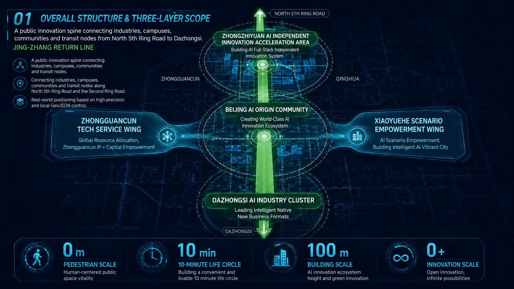
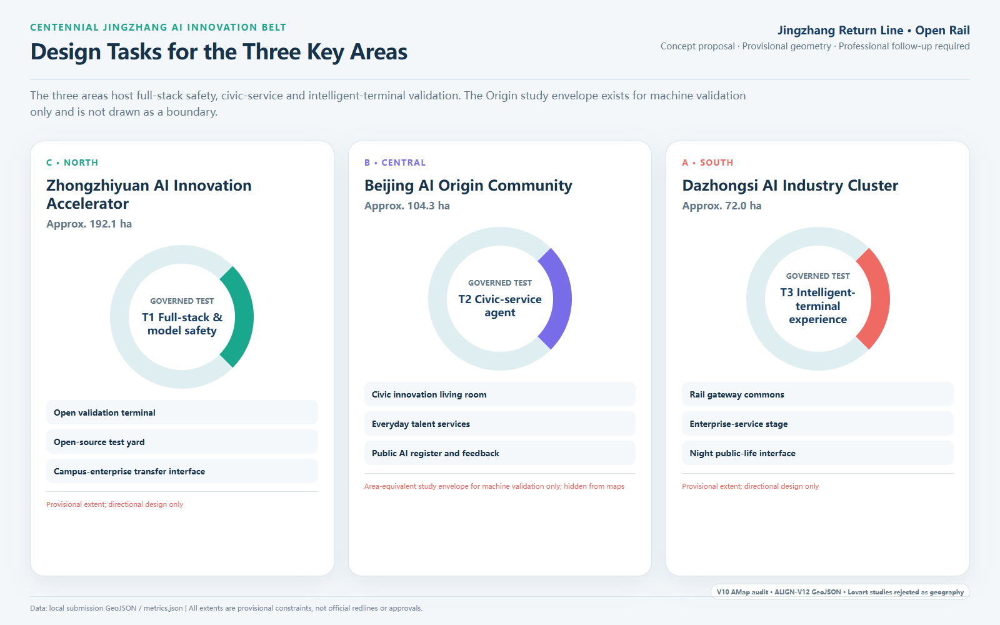
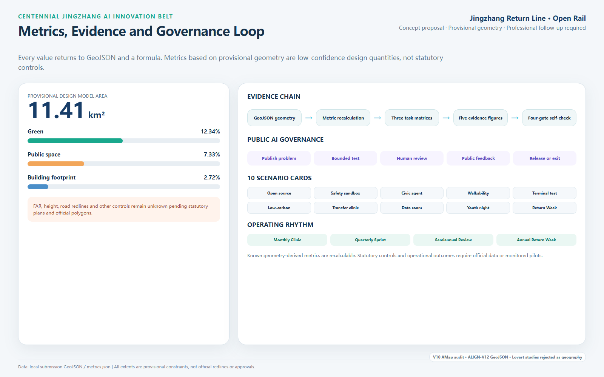

01 Overall Structure and Three-Level Scope
A civic innovation spine connects industry, campuses, communities and rail nodes from the North Fifth Ring to Dazhongsi.

Return innovation from closed campuses to streets, young people from spectators to co-builders, and technology from demonstrations to accountable everyday services.
A civic innovation spine connects industry, campuses, communities and rail nodes from the North Fifth Ring to Dazhongsi.

MOVE, STAY and CREATE share one spatial backbone instead of becoming disconnected theme districts.

Announced areas and tasks are the constraints; AI Origin is not mapped at the rejected provisional location.

Continuous active mobility, east-west stitching, Blue-Green Space and bounded AI service nodes repair corridor gaps together.

Values return to GeoJSON and formulas; public-AI scenarios use bounded tests, Human Review, public feedback and exit mechanisms.

These three silent Lovart-generated films communicate future spatial atmosphere only. They are not site footage, approved design or engineering evidence. Playback never starts automatically; each film includes a local poster, bilingual captions and a full content note.
Tree-lined mobility, rail-heritage commons and public life at dusk.
Read the bilingual content noteA motion concept built from luminous rings and a double-helix civic artwork.
Read the bilingual content noteTime Axis, Gate of Rail, Nature's Breath and Innovation Spiral.
Read the bilingual content noteTwelve fault scenarios completed an offline tabletop protocol rehearsal; all six field-performance measures remain unrun. A complete protocol is not field performance.
Disclose purpose, data, owner, staffed channel and exit date.
Stop: any active scene has incomplete notice.
Basic civic tasks remain possible without login or smart device.
Stop: staffed path is removed.
Accept field-audited priority routes segment by segment.
Stop: critical tactile, ramp or clear-width obstruction.
Calibrate after baseline; a named staffed role is mandatory.
Stop: above 10 minutes or no owner.
Safety and rights issues enter a public disposition record.
Stop: no response after 48 hours.
Remove equipment, close accounts and delete expired data.
Stop expansion: public-space licence overstays.
Completes the interchange without login or smart device; anomalies switch to staffed guidance.
Books non-commercial space while refusing profiling and recommendations without losing access.
Finds a staffed desk after a false notice, sees the scene pause and keeps using the space after removal.
Structured evidence: simulation.json (embedded 12-scenario matrix and 24-sample plan). `self_check.json` proves package compliance only; it is not future field evidence.
Mobility-gap register, civic innovation living room, youth co-creation rights and a public-AI register prototype.
Zhongzhiyuan validation terminal, AI Origin everyday services and Dazhongsi rail-gateway commons, conditional on official boundaries and professional controls.
Member alliance, neutral operator, annual global program, public evaluation and exit.